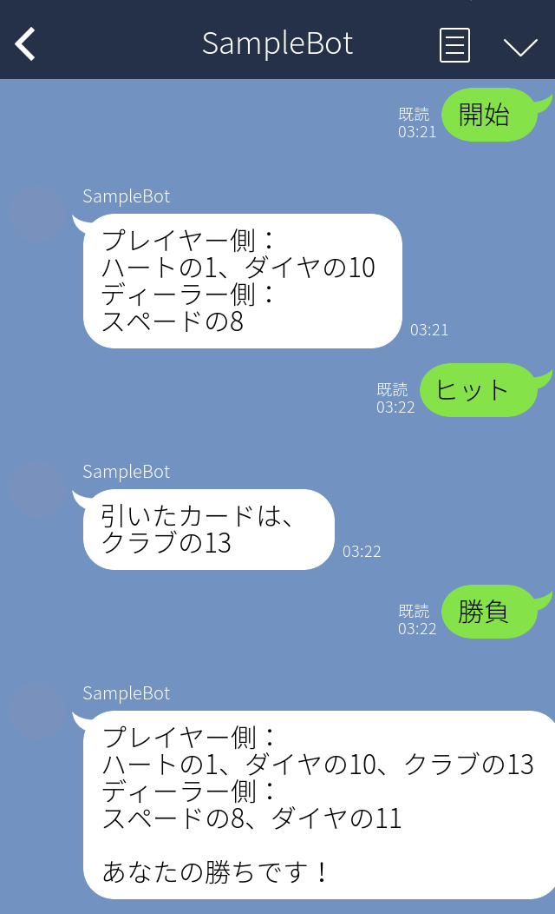

これから3回の講義にわたって、皆さんには情報システム設計の一端を経験してもらいます。 まずは、現状の知識を活用してブラックジャックを作ってみましょう。
フロント部分についてはLineBotを利用し、データベースも使います。 ゲームのルールについては、ローカルルールなど複数あるようなのでこちらから指定します。 記述されていないルールに関しては、各々の判断に委ねます。 任意でクラス図やビジネスフロー図などの図を使っても構いません。
イメージ画像（表示のメッセージについて指定はありません） 
git add.
git commit -m "10回目の課題ファイルを追加"
git push
課題が、課題提出場所（リポジトリ）のURL https://github.com/cist-ictdev-2022/git-test-xxxxxx に提出されます。
課題提出場所（リポジトリ）のURL https://github.com/cist-ictdev-2022/git-test-xxxxxx をもう一度ブラウザで開き、課題のファイルが提出（push）されていることを確認する。
ここまで終われば完了です。お疲れ様でした。
IntelliJ IDEA Ultimate を使います。
IntelliJ IDEA Ultimate は学生の間、学生アカウントで1年間無料で利用できます。
すでにインストールされている場合
Intellij IDEA Ultimateを最新版（バージョン 2022.2.3）に更新してください
Windowsの場合は、ファイルメニューの ヘルプ > アップデートの確認（check for Updates...)
macOSの場合は、ファイルメニューの IntelliJ IDEA > Check for Updates...
Community版を利用している、再インストールしたい、PCを新しくしたなどの事情がある場合
以下の資料を参考に、IntelliJ IDEA Ultimateを新インストールしてください。
https://github.com/cist-ictdev-2022/InstallIntelliJ/blob/main/README.md
（ソフトウェア工学概論と同じもの）
環境が既に整っている場合は飛ばしてください。
https://cist-ictdev-2022.github.io/SoftEng22/02a_InitProject/#0
（ソフトウェア工学概論と同じもの）
データベースファイルの名前はお任せします。（忘れないようにだけ気をつけてください）
https://cist-ictdev-2022.github.io/SoftEng22/02b_DBSettings/#0